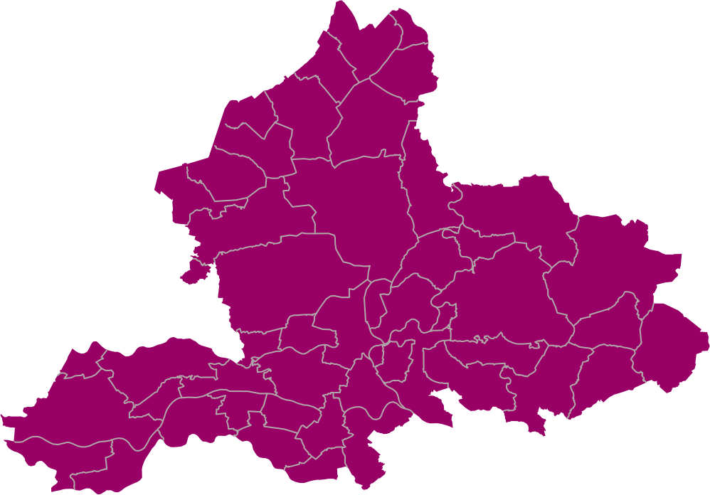

Montferland
Kern/wijk: Didam-Bloemenbuurt
Opzetten en begeleiden van bewonerscooperatie op weg naar een aardgasvrije wijk (Wijk van de Toekomst)
Projectleider:
Benno Elshof
Beuningen
Kern/wijk: Ewijk-de Vording
Het opzetten en uitvoeren van een energiebespaarcampagne samen met wijkbewoners
Projectleider:
Charlotte Post
Arnhem
Kern/wijk: Lombok
Aanpak energiearmoede en opzetten van een wijkklusbedrijf in opdracht van bewoners (huurders van Volkshuisvesting)
Projectleider:
Charlotte Post
Druten
Kern/wijk: Deest
Bij bewoners in Deest ophalen waar accent op energiebesparing en transitie ligt
Projectleider:
Dorothé Jacobs
Nijmegen
Kern/wijk: Waterkwartier
Als energiecoach bij huurders langs om na renovatie nog meer energie te besparen
Projectleider:
Dorothé Jacobs
|
Chris van den Boomen
Kern/wijk: Hindestraat en omgeving
Ondersteunen wijkinitiatief bij verkenning collectieve warmtevoorziening
Projectleider:
Jasper Neyssen
|
Charlotte Post
Lochem
Kern/wijk: Hele gemeente Lochem
Ontwikkelen duurzaamheid in lesaanbod en training vrijwilligers
Projectleider:
Dorothé Jacobs
|
Benno Elshof
Renkum
Kern/wijk: Alle dorpen
Samen met gemeente en stakeholders plan van aanpak energie armoede gerealiseerd
Projectleider:
Dorothé Jacobs
|
Chris van den Boomen
Overbetuwe
Kern/wijk: Alle dorpen
Samen met gemeente en stakeholders plan van aanpak energie armoede gerealiseerd
Projectleider:
Jasper Neyssen
Heumen
Kern/wijk: Malden Noord-Oost
Opzetten en begeleiden van werkgroepen op gebied van energiebesparing, vergroening en communicatie
Projectleider:
Jasper Neyssen
|
Renate Martens
Rozendaal
Kern/wijk: Leermolens Enk - De Moestuin - Delhoevelaan
In 3 buurten verkennen we de haalbaarheid van een buurtenergiesysteem, samen met gemeente en stakeholders en onze technisch partner Qirion
Projectleider:
Margret Klein Holkenborg
|
Jasper Neyssen